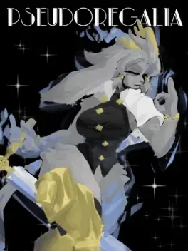
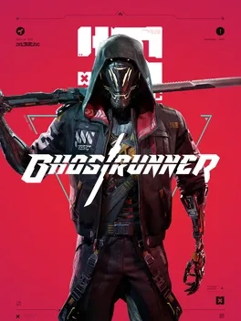
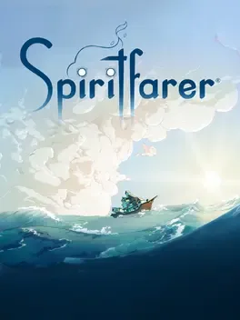
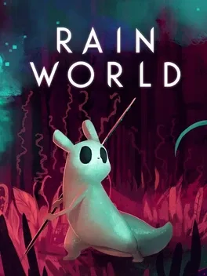
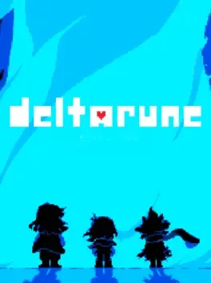

thank you igdb, moviedb and isbnsearch for the thumbnails

this is what i'm currently playing and i am loving it so far
the levels are designed in such a way that you have a nice balance between exploration and platforming. the core moveset is simple but versatile and the level mechanics and design mean that you are constantly using all of it. you can really get into a flow state because of it and that's super fun. i like that you can fully complete a level the first time you enter (which makes sense considering they're linear levels with room for exploration but still it means game time isn't padded out by revisiting old content which is a major pain point of mine)
visually, the game is really pretty - i think the style they went with works really well. spyro's animation communicates every move so clearly (i love his run cycle so much it's just full of life)
i can't speak much for how similar the game is to the original but from what i've heard it's pretty good. i believe they've done a lot of good quality of life changes and improved the game feel a lot and it feels great to play.

i traded shovel knight: treasure trove with my friend for this game... i still haven't got shovel knight back from them and they still haven't played it which is a bit annoying.
since i never played breath of the wild all of hyrule was completely new to me. the addition of the sky and depths probably didn't help with how overwhelmed with content i was. honestly i felt like a lot of these worlds were just empty. it's kind of sad how modern games feel like they have to create such a massive amount of content for players - it contributes to the prevalence of crunch in the industry.
maybe this type of zelda game isn't for me. i don't know.
i really enjoyed the storylines of each area of the game and the dungeons. the sudden appearance of zonai artifacts and disappearance of sheikah technology wasn't really ever explained but i dig the vibes. the characters were great and having your own little crew of glowy airheads was a fun addition. there isn't too much to say about those areas because they're the classic zelda environments but the variety of biomes around the rest of the map is something i am a big fan of. the bosses were really cinematic and epic (colgera is so awesome). the puzzles were...i mean i don't really care for the building part of the game but there was a few where i got "aha" moments which felt great.
i don't really like sidequests because they didn't feel like things i would want to do when the story is right there. i didn't end up finishing the daily gazette and yiga shenanigans (although i did fight kohga all the times because he's so goofy).
my friend was very frustrated that i never went where i was supposed to go - she accused me of being ADHD with how much i just never followed the map (to be fair i did have the minimap off because i hate just following an arrow). i really loved exploring hyrule and finding little monuments but after a certain point (after fighting ganon) i thought it was too much to do and there wasn't much point if i wasn't going to find much.
that was when i stopped playing

i love this game to pieces so i've made a shrine for it
i don't normally go for first person shooters, but journey to the savage planet is a joy all throughout.
you are an explorer for kindred aerospace, the third best space company in the world! on your expedition, you find interesting ecosystems, flora, fauna and...the ruins of an ancient civilisation. essentially the goal is to uncover what's gone on here and to do that you'll have to explore the planet. you're accompanied by a sassy robot named eko who delivers snarky remarks throughout which were always welcome.
the planet is filled to the brim with personality. each location has its own cast of quirky creatures and plants to scan, interact with and run away from. my favourites are probably the pufferbirds, slamphibian and skipper. boss encounters are also really well done i love fighting them every time. the art style is super charming while still being detailed which is awesome (reminder that unreal 4 games run better than unreal 5 games which is stupid).
exploration is super rewarding too! you'll be greeted with orange goo, jet fueli, lore, ore veins or an upgrade material to power up, progress or learn some more about the planet. the game actually follows a metroidvania structure! i think it might have been to first indie to do so in 3D. while not as nonlinear as others, it does a great job as making me excited to see what i can get next which allows be go even more places. upgrades will unlock metaphorical doors but always have some utility either in combat or movement.
the charge shot, bombegranate, blight bombs and shock fruit make combat so much more fun and interesting than point and shoot. they can chain damage, blast away, poison and stun enemies respectively which means a lot of dynamic choices during encounters. movement in comparison is a bit simpler, with you just getting more jetpack uses, a grapple, a tether and a stomp which serve their purpose well enough.
i've actually played the game four times! once in singleplayer, twice in old game minus singleplayer and once in old game minus multiplayer. the multiplayer co-op is so well done and really feels like it was always in mind during development rather than an afterthought.
the hot garbage dlc is even more of what the base game offered which is all i can ask for. you sabotage a rival company's operations and explore an even more challenging environment, encountering new organisms and getting new upgrades along the way. i really need to play through it with my co-op friend some time.
i am extremely excited for the sequel coming up in may, revenge of the savage planet. so happy that the original devs got the right to the ip and absolutely getting my hands on it as soon as possible.

hell pie is a weird one for me
the entire aesthetic of the world and characters was wonderfully cartoonish. nate and nugget are an iconic duo and constant abuse of nugget definitely got a lot of chuckles out of me. the gratuitous amount of crude humour, cartoonish gore and drug and sex references was an interesting choice but ultimately creates some fun scenarios and didn't get in the way of my enjoyment. i understand it's aiming to capture some of conker's bad fur day (which i need to play). that game was nintendo's attempt to appeal to their audience who were now older and being catered to by xbox. kind of ironic microsoft now owns rare.
the plot is very goofy - you're collecting ingredients to make the vilest pie for satan's birthday. each ingredient has these ren and stimpy/spongebob detailed close-ups which are always a joy to see. you'll go to all sorts of places and go through a host of novel and ridiculous situations to achieve this, facilitated by the interesting tonal choices. my favourites were the whale carcass flesh mines, the human slaughterhouse for the restaurant upstairs, the acid trip where you get a gun and heaven
you have a lot of freedom in your movement - jump, double jump, bounce, dash, spin, sprint, ram and even a fly near the end. however the standout one is definitely using nugget as a midair grapple which is so fun. it feel great to use too - you can boost out of it to get a ton of momentum. honestly the entire moveset is pretty damn polished and you get a fair bit of agency over unlocking it. you don't get everything at once, instead it's tied to a tree which you use currency to progress in. although the sprinting, ramming and flying among some other abilities are behind horns which you sacrifice unilambs for. unfortunately though i think the balance of the moveset is completely out of whack. you get a ridiculous amount of air time which allows to skip massive sections of well-designed level.

as much as i would have loved this game to be good, having been in the discord server since the first trailer and always being blown away by the passion in both the art and witty corporate satire, it just doesn't hold up in gameplay.
the movement is quite clunky, in that the character is very stiff with little air control and the dash seems to have a cooldown for no other reason than for there to be curses to make it feel nice to use. it's also extremely long, often leading to you dashing through something to avoid something, but resulting in you getting hit by another part of the same attack (very common in thanager and sorrow fights)
the combat is only tactile and snappy for a few weapons, with the rest being simply too slow (e.g parasol or the buff cloak), too overpowered to care (e.g any busted curse synergy) or spawning so many particles that you easily get hit or the game crashes (e.g lyberis skulls) or something else which doesn't make you enjoy the experience.
speaking of combat, the balancing is not the best, especially when there's achievements for beating the game with ridiculous artificial difficulty modifiers. as you rampage through death inc. the enemies will accumulate a large amount of health, so unless you get a run with a stupid combination of curses, weapons or both your thumb is going to get really tired of mashing buttons.
having played through early access there has definitely been improvements to quality of life. i don't feel like run success is determined by anima luck anymore - just weapon and curse luck now. i think the tree is a bit redundant, with the most useful things being doors that make the health balancing issues even more blatant since you don't have curses.
the game's level design is nearly non-existent save for some of the platforming in the intriguing floors and the final level. this is probably due to the heavy reliance on procedural generation but even in the cases previously mentioned the movement meant that these were notoriously unfun.
lastly the game is pretty badly optimised, having multiple consistent crashes even after early access due to the amount of particles on screen. not even having an FPS limiter to cater in some way to this problem is downright ignorant.
TLDR; art style and humour is phenomenal but the gameplay where most of the time is spent lets it down tremendously

enter the gungeon has so much passion put into it it's insane.
every aspect of the world, from the enemies to the environments to the lore is gun-themed. the variety of guns you can get on runs is so damn fun and there's some cool references sprinkled in as well (i am a sucker for references lol)
i love that despite being a shooter it is primary a bullet hell. the enemies on their own have simple bullet patterns but when combined, patterns which are extremely satifying to weave through emerge. the bosses are especially cool tests of skill (fuck ammoconda though)
the game really does reward skillful play by giving extra hearts for mastery of bosses and randomly spawning items. bonus stages were a really cool thing i didn't know about which give more chances at cool weapons and items but are hard.
unfortunately for me, i'm not the best at bullet hells and enter the gungeon is a fucking hard one so most of the time i don't make it past the third stage :p

again, i don't normally go for first person shooters but ghostrunner completely subverts the conventions of the genre.
you're a cyborg ninja with enhanced physical abilities, a katana and rebellious streak. the game has you working your way up dharma tower to dismantle mara's tyrannical rule, killing anything in your path. you are guided by the architect (who turns out to be a snivelling bitch) and join zoe's rebellion, forging your own path as jack.
you may be able to slice your enemies in half with a single swing, but you die in one hit too. this means the most fun way to play is to outmaneuver the enemy and get up close and personal and damn is that fun. as a cyborg ninja, you can slide, run on walls, grapple and dash in any direction. chaining these is extremely satisfying and you're able to conserve your momentum to really blast your way through levels. honestly my favourite parts were the platforming sections, like the climb and TOM boss fight.
not to say that the combat isn't fun because it definitely is. you choose the best routes to deal with each enemy layout - they're placed such that you need to strategise which makes conquering a horde of foes an exhilarating feat. enemies are designed in ways that challenge your skill in fun ways too...except the splitter fuck the splitter. they force you to think more carefully about your movements and even more when there's multiple but they never feel unfair.
while not unfair, the game is extremely difficult and you will rack up a lot of deaths. thankfully, there are no lives and restarting is instant which means you can immediately pick up where you left off. this also allows experimentation with different strategies all so you can finally get that perfect room clear. i also liked the boss difficulty too they're really well balanced and designed.
the game has this cyberpunk aesthetic which is so damn pretty and despite the high detail runs really well (another reminder that unreal 4 games run better than unreal 5 games which is stupid). the cybervoid sections also have an awesome look to them with the limited palettes and blocky shapes. graffiti, props and trinkets around the environment also do some appreciated worldbuilding.
the hardcore mode is a great way to replay the story with even more challenge and the killrun and wave modes...exist. i'm not really a speedrunner but i've definitely enjoyed replaying the game multiple times.
i also made some mods for this game! i'm particularly proud of the banana katana. dmgvol and longerwarrior have done some awesome work in this department, with custom menus and level, randomisers and extended wavemode!

i don't know what drew me to this game specifically but the goofy artstyle and slapstick premise definitely helped
it's good, polished, platformer fun where you reverse the hot-dogification of old people and free pancake people from dinosaur tyranny, among other shenanigans with your giraffe and pet rock. the levels are really fun and there's some real mechanic gems in there. the references to media hidden in the stickers were a fun surprise - easter eggs are always great
i need to finish my co-op playthrough with my friend at some point it's a good time

i actually haven't finished twilight princess.
i find the game to be very slow (especially at the start) and at times very confusing. the plot tries to be extremely edgy for no reason, the tears of light sections are extremely tedious and the dungeons are extremely linear despite trying to convince you they aren't.
i've made it to the part where midna fucking dies.

okay this might be surprising but this is one of my most played games. period.
i know it's a free game which is made to catch whales who will fork out thousands for gem apples but the gameplay rocks. there is four different classes you can play as which all complement each other really well which you use to fight kirby bosses. i main the doctor because of the potion move which has high dps and healing. the movesets of all the classes (the others being sword, hammer and mage) go quite deep actually which is awesome.
we love player expression here.
there is some some cool custom bosses made for this but considering i haven't played star allies they were all new. parallel knightmare and galacta knight were really cool.
i did pay like two quid one time because i had some credit left over but nothing else. i don't think i'll ever pay money on a free game ever again lol

i actually had never heard of shovel knight when i got it.
looking it up now, i know it was one of the first successful kickstarter stories which is really cool and i really think it still is fantastic
the first campaign is the shovel of hope. as the first entry, it did an incredible job at establishing the world, cast and vibe of the series. the order of no quarter is such a quirky group of knights who are a joy to watch and fight. the central mechanic of the pogo is used in so many creative ways and the chiptune music genuinely goes hard (lich yard my beloved). you can really tell that the developers believed in the philosophy of limitations breeding creativity.
plague of shadows is generally the least favourite campaign among the fanbase. it is my absolute fucking favourite. the movement you get with the bomb burst is so cool and the amount you can customise your bombs is great. the side areas of the levels where you can get relics can get super challenging and i love it. but i think the thing i love most about this campaign is the story. over the course of playing you understand plague knight a lot more. he's just a little guy. he's awkward, eccentric and wants to prove he's good enough. he fumbles his relationship with mona because of it but shows how much he cares in the end. and it ends so sweetly with a waltz. i need to replay it but can't because i traded it temporarily with a friend for tears of the kingdom
urgh...specter of torment is the fan favourite but it is really good...and really edgy. specter knight is really cool to control - he can skateboard, run on walls and do a glorified bomb burst when you get the button prompt. that's not a joke that's literally what the developers did the levels are really tightly designed for him (just imagine what that could've been like for my skrunkly plague knight)
king knight is a really fun campaign as well - his bash and pirouette are really cool design choices and it was interesting how different the world was from his perspective. i didn't think the card game was that fun to be honest and it took me ages to beat cardia so i could actually fight her. but otherwise just like specter the levels were really tightly designed for him.
treasure trove has some extras as well - challenges i'm shit at, genderbend mode (very fun) and showdown! showdown is actually a really fun platform fighter and the movesets of each character really suit them. the story mode is fun and like many a fighting game i'm not amazing but it is great.

what more is there to say about hollow knight? it's a fucking masterpiece
the world is so vast that when first playing i was amazed at how far the map continued to expand. each area so meticulously fits with the rest in interesting ways such that nothing feels isolated. the blue lake feeds the eternal rain of the city of tears, the mantis village protects hallownest from the mindless horrors of deepnest, the snow of kingdom's edge are moulting skin of the great wyrm carcass. these little interactions do so much work to tell stories of what transpired.
the game takes a very hands-off approach to its lore, telling it mostly through the environment, short cutscenes and sparing dialogue. it's goes pretty deep too - enough for mossbag to have an entire channel devoted to it, although much of it is speculation. the godlike pale king created the civilisation of hallownest, gifting sentience to the bugs in his domain. citizens began to worship the wyrm as a god, throwing aside their old religions. the radiance, a moth deity wasn't happy with this so started to infect the minds of bugs with its light. infection spread rapidly and the kingdom quickly thrown into disarray, the king tried to find a solution. they turned to a more ancient being, the abyss lord, and used their power to create vessels to contain the radiance. the hollow knight was chosen to do this, leaving the rest to die but he was not empty enough to serve their duty, allowing infection to continue to leak.
honestly i didn't really play for the plot though. it's just a fun thing to research after playing. the game truly shines in its combat, exploration and platforming.
the combat system houses a surprising amount of depth! your nail can strike in all directions, allowing freedom to best position yourself relative to the enemy. downward strikes will allow you to pogo, keeping you in the air while dealing damage. striking enemies will gain you soul you can use to cast spells or heal, which gives rise to interesting decision making. you have multiple spells which each are their own best situations: vengeful spirit can push floaty foes away and can multihit, desolate dive gives you a safe landing with generous invincibility, and howling wraiths can deal massive damage to weighty enemies above you
most importantly though this combat is utilised. there is a plethora of enemies which each pose a threat in their own way and make exploration more engaging. when combined with stage hazards they make for a really fun time, as explored in the colliseum of fools. but the bosses are where it's allowed to truly shine. there is so many bosses that fighting them all back to back takes half an hour (which you can do in godhome). they all have their own theming and place in the world of hallownest and none of them ever feels the same. truly mastering a boss and their attack patterns feels like learning a dance which is so damn satisfying. my favourites in this respect were definitely the mantis lords, the grimm fights, soul master and pure vessel. not to say there isn't the occasional miss - in my opinion god tamer, grey prince zote and nailmaster sly are just not fun.
you can also add some variety with charms changing your attributes. these are pretty badly balanced although holland has some excellent videos suggesting how to improve this. the charm system allows for so much player choice that many games have followed suite and copied it. you'll get these by exploring the world and getting them from npcs.
hollow knight really rewards exploration. by exploring, you'll find charms, relics, upgrades and interesting landmarks and npcs which add to the story. upgrades allow for further exploration and opening up of the map which is such a neat structure. it does such a great job of easing you into the world, slowly opening up more and more as you play. blue fire was my first metroidvania but it did not use nonlinear world design to this incredible extent. there is so many different routes you can take and orders in which to do things which is amazing for replayability. in GMTK's boss keys video, mark essentially realises that trying to map out all of the ways to play the game is fruitless.
the upgrades in question are either movement or "key" to get past a specific "lock", e.g diving through breakable floors or literal keys for doors movement upgrades are definitely the most exciting type to get as they change how you get around the world. hollow knight's movement is pretty well polished but isn't revolutionary. your useful arsenal includes a jump, pogo, dash, walljump, double jump. the pogo is the most interesting move and allows for some cool shortcuts. plus the walljump allows climbing up walls and double jump has some weight which makes them more interesting than other games but on the whole i didn't feel i could express myself with the movement - it's essentially a hat in time in 2D. the white palace was a very fun test of these skills but the path of pain demands precision in the controls which simply doesn't exist.
to conclude though, hollow knight really innovated the metroidvania genre and inspired so many peope to try their hand at one... although this has made the metroidvania market ridiculously saturated - you really have to stand out to be a success

spiritfarer broke me over and over again but i love it for that. it's the type of game you should only play once. you really need to play it firsthand. it's such a beautiful experience that i'll be doing it a disservice here but i'll try my best.
the archipelago is enormous and the variety in gameplay is really cool. i love the little minigames which have you rushing all around the ship but the more cosy tasks have their charm as well.
as you tend to the spirits on your ship you interact with them, learn about them, their lives, their hopes, their dreams, their regrets. you do your best to comfort them, fulfill some of their wishes, cook their comfort foods, be their friend. but of course then you have to say goodbye
this is the heartwrenching part
you know it's their time but still you want to hold onto them just that bit longer. when you finally decide to go there's always this slow, final boat trip to the everdoor. on the way they talk to you so genuinely, maybe talk about what's waiting for them. and then you arrive. they deliver a line that strikes you to your core. they wrap you in a warm embrace. they're gone. and you're still here. man. it's just so special.

rainworld evokes feelings i genuinely can't express with words but i'll try
run-down towering megastructures stand unchanging and sprawl so far that you truly feel insignificant. they are in disrepair, caked with grime, reclaimed by the nature they displaced yet the intricate details underneath make you wonder what came before you
but in the end it doesn't matter, only you and the creatures are left. the ambient music is very sparse which allows you to appreciate the sounds of surviving flora and fauna (although when it does let loose it absolutely goes hard). each creature has their own niche in the ecosystem and their own relationships with others. some are friendly to you, provided you are civil, others are indifferent unless you provoke them. but to most, you are just as appetising as any other prey.
no special provisions are made for you. you aren't special. if you want to survive you need to work for it, just like everyone else. and damn if that isn't satisfying
you are agile, and have the advantage of opposable thumbs. the freeform nature of your movement allows outmaneuvering your foes with backflips, slides, pounces and rolls. not only to escape danger, but to position yourself for a strike. you can improvise with objects from your environment to gain the upper hand. obviously rocks can stun and rebar can wound but you can also use the ecosystem to your advantage.
two lizards will fight each other over food you throw at them, diverting their focus away from you; insects will bind you if aggravated, but can be set on others by throwing their hive; jellyfish which sting you will also sting others; squidcadas and jetfish increase your mobility such that others have no chance of catching you; any large creature chasing you can be lured to a larger creature which will chase them. the emergent gameplay which forms from the network of creature interactions truly makes the ecosystem feel alive.
it's also constantly simulated so creatures will interact regardless of whether you are there or not. you could walk in on a falling lizard or scavenger battleground at anytime, and you'd be caught in the crossfire. this hammers home your insignificance in the world - sometimes you can just be in the wrong place at the wrong time. but with enough skill you can survive.
the karma system encourages mastery of the mechanics and learning of the ecology. it permits access to new areas and on to the next ecosystem with new dynamics to understand. higher tiers will even allow you to skip to later areas or discover a new side of somewhere you've previously been. echoes tucked in the corners of the world will enlighten you further and give you that little more lore.
oh the lore.
the environment tells so much to you without a single word but eventually you will stumble upon the only remnant of civilisation left - the iterators. they lament the cycles which all those in this world are doomed to repeat and the lengths at which the ancients and themselves went to escape. pearls found around the world hold more fragments of lore which rewards exploration even more...even if lugging them back is extremely tedious. but once you understand the nature of your existance you can make the journey and ascend.
somehow in my first playthrough i missed five pebbles and ascended through pure coincidence having met all the echoes. i'd even missed the majority of the game by doing so. i'd missed so many regions. this game is massive. luckily i filled in the blanks during my hunter playthrough and fell even more in love with the game.
and mods made me fall in love even further. whether it's incredible quality of life changes like camera scroll, manual dialogue progression or discord rich presence, fun stuff like cosmetics, splat cat, blood or the funny deltarune explosion or entire new ways to play like custom regions, new campaigns, online multiplayer and randomisers they breath so much more life into the world and allow me to spend even more time with this amazing game... although not nearly as much time as the dlc
yeah downpour added a shit ton to an already huge game. the fact that it started out as a project by modders is such a testament to the great community. the new campaigns boast new creatures, regions, lore and mechanics which all kick major ass and it was amazing to have the world enriched even further in an official capacity... however the new campaigns have the same problem as many of the modded custom campaigns - they fail to capture the scrappiness and insignificance which makes the base game so special.
in these campaigns you are special. you can knock out enemies with the might of your body, blow shit up, spam infinite spears, zoom across the landscape and one-shot enemies. why bother to strategise and understand your environment? despite this though the abilities are still a joy to use and provide a great power trip after struggling against these creatures for so long.
but yeah as you can probably tell i fucking love rainworld and will probably make a shrine about it soon considering i've basically written it here :p

i thought i would have been a bit alienated from deltarune when i first picked it up since at the time i knew nothing about undertale. but this wasn't the case at all - no undertale knowledge was required to fall in love with the game.
the colours and landscapes of the dark world are so cool and wonderfully bizarre and the game never makes it clear if it's make-believe or something else.
i actually wasn't expecting there to be so much mechanical difficulty in the combat. i like the agency you get when approaching combat on whether to attack or resolve a situation peacefully. bullet hells have never been a massive strength of mine but learning attack patterns was very satisfying. i really felt like i earnt my pacifist win against jevil. the punch-out against queen at the end of chapter 2 was bloody insane as it should've been
the cast has so many characters i have claimed as my blorbos. i endlessly adore chapter 1 ralsei to the ends of the earth and will fight anyone about it. my other faves are susie, jevil, seam and queen.
the dialogue had me laughing uncontrollably at how funny it was. some of it is extremely witty but there's also some small random stuff thrown in there which cracked me up
i am always blown away at how incredible the soundtrack is - my favourites are field of hopes and dreams, the world revolving, A CYBER'S WORLD?, smart race, and attack of the killer queen

a hat in time is packed to the brim with charm
the music really slaps - my faves are sleepy subcon, train rush and clocktowers beneath the sea
while nowadays i find the movement a bit limited the level design does plenty of heavy lifting.
the characters and worlds still stick in my mind and each of them has their own great vibe. the rifts you can find also flesh out what really went on with these people and places
mafia town is such a quaint island full of a gang of cooks who haven't foggiest idea how to do anything. it's a great intro to the game, cementing mustache girl as an adversary and ending in a great bossfight with the head chef of the mafia. my favourite mission is the lava mission - it's just such a wonderfully stupid concept
dead bird studio pits two cut-throat birds against each other in the race to the film awards. you're essentially helping both of them beat each other to exploit them for time pieces. i think, like everyone else does, the best part of the chapter is murder on the owl express.
subcon forest has a tragic backstory but when you arrive you bring some happiness to the place. you essentially barge in on snatcher and make him your friend, whether he likes it or not. the toilet of doom takes the cake for me since it's just a great bossfight built on a dumb idea.
alpine skyline has so much culture and freedom to explore - i wish the game embraced the open-ended structure a bit more. the twilight bell was by far the coolest place - it felt so magical and alien
seal the deal added the cruise - the seals are so fucking cute and the ship going titanic was hilarious. death wishes added some much needed difficulty and the modded content put in the dlc was a great nod to the community. cruisin' for a bruisin is such an intense but fun mission although i'm still salty i missed the 70 task bonus by 3 tasks
nyakuza metro finally took freedom to the next level with free roam. a futuristic city of cats is an amazingly unique setting which really works. the empress is actually an intimidating presence and the climax was amazing.
also yes i know i'm a muppet for playing it on the switch when the modding community on pc is prolifically incredible

i remember using quite a few different pokemon during my diamond playthrough, all sinnoh pokemon and johto ones i missed in silver


honestly i've forgotten a lot about the game despite it being the last pokemon game i've played
i remember the world being entertaining enough but i think this was sort of also the point where i realised pokemon isn't doing anything new with the franchise to make the games any better. it's new designs, towns, gyms and characters which are functionally the same as the very first games. i think because ultra sun has such a subversal of this in the trials and the aether foundation and silver in the nonlinearity this wasn't a problem for those games however for diamond it's go to a town, if it has a gym do that, maybe do some side or story stuff and repeat. the story stuff always involves the evil team being nefarious and fighting some grunts and a leader.
but i do remember cynthia. of course everyone remembers cynthia


super mario odyssey was my first game on the switch and really deserves all the praise its been given.
the movement is so expressive, synthesising so much of the comprehensive actions from throughout the 3D games (not that i knew that at the time). the long jump, dive, ground pound jump, spin jump are the best and many link nicely with the new roll. chaining these moves gives so much freedom to go wherever you please as you please which creates so much fun.
although i hate the midair cap bounce. it's essentially a double jump with extra steps since it isn't contextual which means you'll use it any time you need that little bit more distance. this creates a dominant movement strategy which invalidates some of the freedom otherwise available.
the kingdom are so well conceptualised and designed too! many of the kingdoms use extremely novel themes and when normal themes are used some twist is added to spice them up e.g the steampunk gardens of the wooded kingdom. my favourite kingdom was absolutely the lost kingdom - the palette was gorgeous, the gamelan background track was such a vibe and the verticality and density of the kingdom worked really well
every nook and cranny has a power moon to find which allows choice over which challenges we choose to take, both improving accessibility and allowing player to find their fun. although this can be a bit annoying when playing to full completion and makes the effort to obtain each moon extremely variable. i don't really mind this moon overinflation except some of the really gimmicky moons (fuck jump rope genius).
the moon cave was a really fun medley of mechanics and the closing section where you capture bowser was hype as hell. the postgame dark and darker sides are pretty challenging! some of my favourite subareas are in dark side and darker side was a real gauntlet (although some of the challenge was just simple endurance which also was a bit of a waste of time). the low gravity broodal fights were just extremely annoying though.

it may be surprising that this was my second pokemon game after ultra sun but it just turned out that way since we got the gameboy cartridge after
i love the designs in this generation - i just wish there was more since kanto pokemon still have a dominating presence and i knew them from the anime.
i still managed to get a full team of johto pokemon i adore though!


johto is a really nice region - ecruteak, goldenrod, the lake of rage, the ruins of alph and the lighthouse are so iconic especially with the amazing official shorts to flesh them out (the ecruteak theatre one is particularly gorgeous). i like a lot of the characters too - professor elm is such a twink, silver such an emo, clare such a whiney bitch
i was a big fan of the open-ended middle of the game where you could do stuff in any order. of course this has the consequence of interesting (bad) level scaling later but was really neat and wasn't done again until pokemon scarlet and violet.
the plotline of team rocket trying to recover from giovanni's disappearance actually felt like it had stakes... until giovanni didn't show up when they took over the radio tower which was extremely anticlimactic
the entirety of the kanto region being in the game as a postgame is pretty damn awesome. the region having changed since the first games was a really cool touch and it was also nice for me since i never played red and blue so i got to experience their regions. i wish the levels of the trainers actually scaled so you'd be ready for the final challenge...
fuck red - the only way to beat him is to grind

this was my first zelda game!
when i played it i didn't realise this was considered the best game in the zelda series at the time, even the best game period by many since i just got the cartridge from my cousin but i certainly support that opinion now
the game is endlessly full of life and care - the world, characters, environments, lore, enemies and music are
the 3D environments really enhance the cultures and settlements from the earlier games: the gorons have their city carved into the base of death mountain; the zora made their home in an idyllic cave under lake hylia; the kokiri dwell in the vibrant lost woods; and the hylians have towns dotted all over hyrule
the story is surprisingly compelling for a gameplay focussed experience! the deku tree "gifts" you with navi and charges you with purging darkness from him. after, you set off into the world to warn the kingdom of the evil which turns out to be the king of thieves by taking the sacred stones yourself you stop ganondorf getting them which leads you to the two other early dungeons.
however this backfires when you open the doors to the sacred realm and ganondorf takes the triforce. you must find the sages as an adult who are the only ones with the power to seal him away leading to the rest of the dungeons. i love this twist so much since the ganondorf's success changes enemies, characters and locations in the future and you experience disastrous his rule has been for the kingdom firsthand. i also remember being so shocked yet delighted by this since i expected the game to end after only the three dungeons but the realisation that was only the tutorial was magical.
the dungeons themselves are genuinely fantastic and i cannot fault a single one of them. each have such great context behind them which make them a joy to explore - i especially love the aesthetics of jabu-jabu's belly and the forest, shadow and spirit temples. of course the puzzles themselves aren't always head-scratchers but that was never the intent. the exploration of the places and the bosses are where zelda dungeons shine. i love the bosses and each one of them is amazing.
i played the 3ds version so didn't suffer the iron boots pain since i could map them to a button like the other items. the touch controls i think were integrated quite nicely in this respect, adding some more slots to map items. it's such a great system which i'm baffled by the choice to remove since breath of the wild.
oh my god. the music. ocarina of time's soundtrack might be my favourite soundtrack in any game ever. the simple melodies are some of the most iconic and memorable i have ever heard and every now and then i'll find myself humming them. since they had to be playable on the ocarina this even limited the palette of notes which many of the tunes used.
however this certainly didn't stop zelda's theme, lon lon ranch, the lost woods and the windmill hut from being bangers. when unrestrained the melodies can really let loose - the title theme, kakariko village, great fairy fountain, gerudo valley and kotake and koume live rent-free in my brain. but even the ambient tunes are so immediately recognisable and whenever used in youtube videos i always catch house, kokiri forest, shop and hyrule field

this was my first pokemon game!
being my first pokemon game i had no idea what i was doing - i remember from the start using my level 50 regigigas with slow start from mystery gift which was painful. i was quite annoyed i couldn't get the ash greninja into ultra sun from the sun demo because i had just watched the xyz anime.
unfortunately i can't quite remember what exactly my first team was, especially since i've done two playthroughs (the second one completing the entire pokedex) but here's some pokemon i remember having on my team at some point (if only lively animated gen 5 spritework existed for newer generations)


and some more i shiny hunted, used in the battle tree and got from mystery gift (yes i went to GAME and got zeraora which was so cool)


what sucks is i used the free period of pokemon bank to transfer my pokemon to a new save instead of transferring them to pokemon home before selling my 3DS so i don't have an actual record of all the time i spent on the game :(
being my first pokemon game, i didn't care about changes like how gyms had been turned to trials and the lack of any HMs - i enjoyed the variety of trials and HMs are just progression blockers there's no reason for progression to hinder movesets
there is some STUNNING environments in alola
my favourites being melemele meadow, mount hokulani, thrifty megamart, poni canyon, altar of the sun, ultra megalopolis and literally all the ultra beast worlds
the music is pretty nostalgic to me now
especially the title theme, melemele route 1, hau's battle theme, hau'oli city, heahea city, paniola ranch, poke pelago, aether paradise, abandoned thrifty megamart, seafolk village, the battle tree, the summit of mount lanakila, elite four, ultra beast theme, beach spot, ultra wormhole, ultra necrozma battle, ultra jungle and mantine surf (although i got annoyed with it because i played too much of it to farm BP)
speaking of minigames, a lot of the side content was pretty fun!
- mantine surfing was really fun to figure out and a great way to grind BP
- totem stickers were a fun excuse to explore every nook and cranny
- photo spots were pretty cool to see pokemon in their natural environments
- pokemon refresh allowed you to really feel more kinship with your party
- poke pelago was a cute way put your boxed pokemon to use
- ultra wormholes were fun to zip through and find exclusive pokemon (sigilyph my beloved) although the legendaries just felt a bit random
- festival plaza was a good little cyberspace for battles and shops...and rainbow rocket
rainbow rocket was an awesome postgame! i didn't realise it was a throwback adventure until i saw lysandre and i had no bloody idea who anyone else was (the reveal of ghetsis and colress's involvement was just confusing for me lol) team skull was a really fun antagonistic force which weren't actually that threatening but had a great vibe - the aether foundation being the true sinister force felt even more unsettling yet also more fitting
the characters are still some of my favourite in the series! the anime probably helped instill some life in them but i really love acerola, hau, mallow, sophocles, guzma, hapu and zossie

i got this game as a hand-me-down from my cousin when i first got my wii
now i'm thinking about it mario galaxy was probably my first non arcade game i ever played
i don't think we've had a mario adventure of such scale since galaxy - the bombastic music, the planetoids, the vastness of space and the proportion of bossfights are uncomparable (yes galaxy 2 exists but i think the world map detracts from it). the gravity mechanics are a fun gimmick which play well with a bunch of other mechanics
galaxy was the first 3D mario to have worlds which were purely linear which i'm slightly disappointed by. my disappointment mostly stems from the fact that the less open-ended levels meant galaxy limited mario's moveset. it really is a stark difference from odyssey's vast pool of moves - mario can jump, sideflip, backflip, longjump and spin and that's it. the spin allows for some cool sequence breaks but there isn't much beyond that. otherwise levels are pretty scripted in terms of how you can approach obstacles.
the power ups are fun - bee mushroom allows climbing on honeycombs and limited flight, boo mushroom is infinite flight and intangibility, spring mushroom gives big jump but limits movement, koopa shell boosts swimming and fire and ice flowers do what you expect. they add some gameplay variety and are used sporadically so don't overstay their welcome. i think my favourite is the ice flower because it completely recontextualises water in the environment - you can skate on ponds, fountains become platforms and even waterfalls can be walljumped.
the motion control games on the other hand can go fuck themselves
there's literally an entire motion control set of galaxies which were are a slog to get through. ball balancing, manta surfing and bubble blowing aren't bad just slow to control but the amount of levels dedicated to them and how long they are is what pisses me off.
the proper levels are so good though! the imagination put into each galaxy is brilliant and some mechanics really put a smile on your face. i loved disassembling toy bowser, climbing up buoy base, soaring with dandelions and so many more things. the boss fights are so well done as well! they don't feel similar whatsoever despite all having the three-hit pattern (apart from bonefin who was just terrifying). the endgame stuff can get pretty intense and awesome too with purple comets. the purple comets are great because they open up the entire galaxy, merge levels together in a galaxy finale or create some new terrifying gauntlet.
but the levels get soured in full completion with the other comets...
prankster comets essentially just recycle content artificially with modifiers. one hit death, time limit, racing, faster enemies, whatever. all it does is bloat the already massive amount of content - they're an eighth of the content and the main reason i'm reluctant to do the full completion with luigi

first game on the wii!
it's just as iconic as ever and has given me much joy whenever i've had friends over and the whimsical miis and locales will never get old
the amount of gameplay variety is refreshing and it's just easy to pick up and play! i guess that's the point of an arcade game and i think they executed it really well
my most played sport is probably swordfighting but specifically the speed slice mode. idk for some reason that was the thing that was most fun for me
other sports i played a fair bit include bowling, cycling and table tennis
none of them count as exercise though >:p

it's a classic what can i say
there's plenty of versions of tetris nowadays that i could be playing but i'll always prefer this one. i just love the muted colours and chirpy arrangement of korobeiniki.